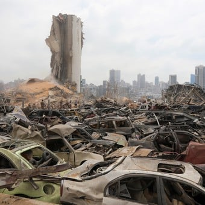

|

|
Beirut fue el centro de atención mundial después de que un par de explosiones dejaran más de 150 muertes y 5.000 heridos. De igual forma, la catástrofe ha dejado más de 200.000 personas sin vivienda y unas pérdidas materiales de entre 3.000 y 3.500 millones de dólares.
Este gran desastre sucedió en una fábrica de fuegos artificiales, en el que se encontraban guardadas, desde hace seis años, 2.750 toneladas de nitrato de amoniaco. El presidente del Líbano, Michel Aoun, pidió que se declare el estado de emergencia durante dos semanas, luto nacional durante tres días y la liberación de fondos para afrontar la situación, incluida la entrega de dinero a los hospitales y el pago de compensaciones.
Según el Servicio Sismológico de Estados Unidos, la explosión generó una energía parecida a a la de un sismo de 3,3 grados, aunque tomando en cuenta lo ocurrido en la superficie, la intensidad pudo haber sido aún mayor. Asimismo, según fuentes citadas por 'Daily Mail', la energía liberada por la explosión equivalente a tres kilotones, un 20% de la bomba atómica lanzada sobre Hiroshima (Little boy), la cual tenía 16 kilotones de potencia.
|

|